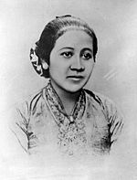
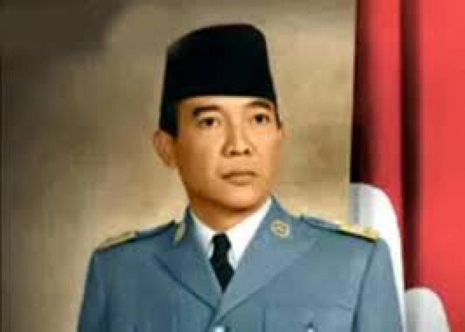
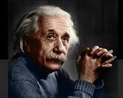
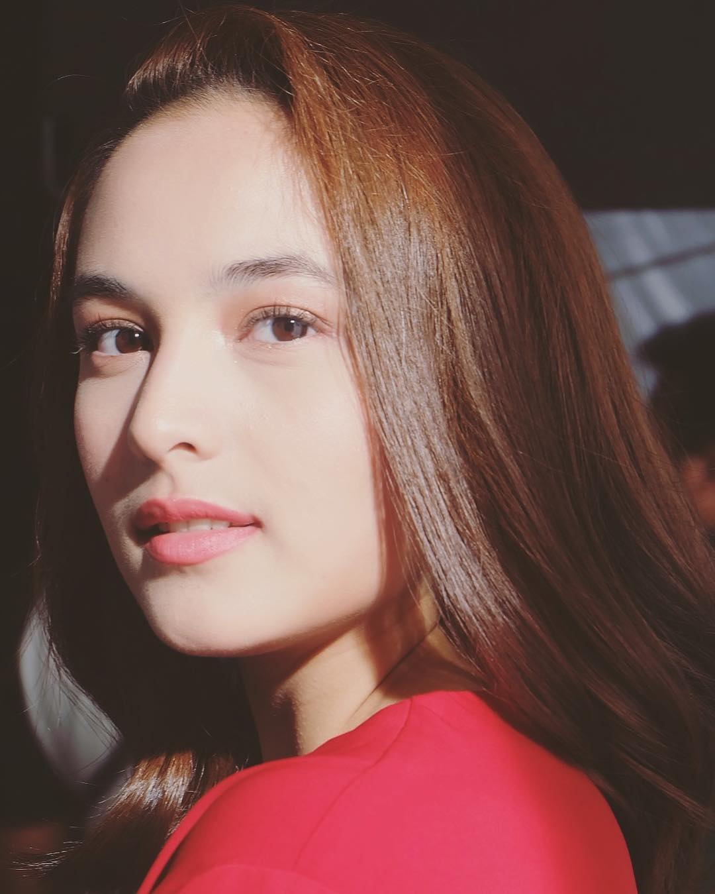

|

ibu. Kartini
seorang tokoh Jawa dan Pahlawan Nasional Indonesia. |

Ir. Soekarno
Presiden pertama Republik Indonesia menjabat pada periode 1945–1967 |

Albert Estein
fisikawan teoretis kelahiran Jerman mengembangkan teori relativitas

Chelsaa Islan
seorang aktris berkebangsaan Indonesia. Dia telah bermain dalam beberapa film. |